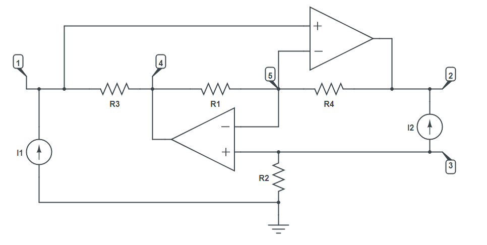

R-parameters
Circuit description
Antoniou Gyrator grounded inductance simulating circuit using OVA and OTA are used in the design of multiple order High pass active filters in respect of their superiority in passing the signal from low frequency to extremely high frequency by using different configuration
For the purpose of calculating R parameters, we've added two ideal current generators to nodes 0-1 and 3-2.

Goals
- Solve the circuit with MNA
- Calculate Antoniou response $U$
- Calculate R parameters
Modeling the circuit
First we include Symbolics.jl and CircuitS.
using Symbolics
include("../CircuitS.jl")Then we create the circuit and add all of the elements as shown in the picture above:
circuit = create_circuit()
add_element([Resistor, "R1", 4, 5], circuit)
add_element([Resistor, "R2", 3, 0], circuit)
add_element([Resistor, "R3", 1, 4], circuit)
add_element([Resistor, "R4", 5, 2], circuit)
add_element([Current, "Ig1", 0, 1], circuit)
add_element([Current, "Ig2", 3, 2], circuit)
add_element([OpAmp, "OpAmp1", [1, 5], 2], circuit)
add_element([OpAmp, "OpAmp2", [3, 5], 4], circuit)Simulation
After we've built everything, we initialise and simulate the circuit:
init_circuit(circuit)
result = simulate(circuit)
println(result)Dict{Any, Any} with 7 entries:
"V5" => -Ig2*R2
"V3" => -Ig2*R2
"V2" => (Ig1*R3*R4 - Ig2*R1*R2) / R1
"I_OpAmp2" => (-Ig1*(-R1 - R3)) / R1
"V4" => -Ig2*R2 - Ig1*R3
"I_OpAmp1" => (Ig2*R1 - Ig1*R3) / R1
"V1" => -Ig2*R2Antoniou response is the voltage of node 3:
println(result["V3"])-Ig2*R2R parameters are defined as:
\[\begin{bmatrix} u_1\\ u_2 \end{bmatrix} = \begin{bmatrix} r_{11} & r_{12} \\ r_{21} & r_{22} \end{bmatrix} \begin{bmatrix} i_1\\ i_2 \end{bmatrix}\]
$i_1$ and $i_2$ are currents from our current sources, so all we have to do is calculate the voltage on those generators:
println(result["V1"])
println( simplify(result["V2"]-result["V3"], expand=true) )-Ig2*R2
(Ig1*R3*R4) / R1And in matrix form:
\[\begin{bmatrix} u_1\\ u_2 \end{bmatrix} = \begin{bmatrix} 0 & -R_2 \\ \frac{R_3R_4}{R_1} & 0 \end{bmatrix} \begin{bmatrix} i_1\\ i_2 \end{bmatrix}\]
The simplify function applies a built-in set of rules to rewrite expressions in order to simplify them.